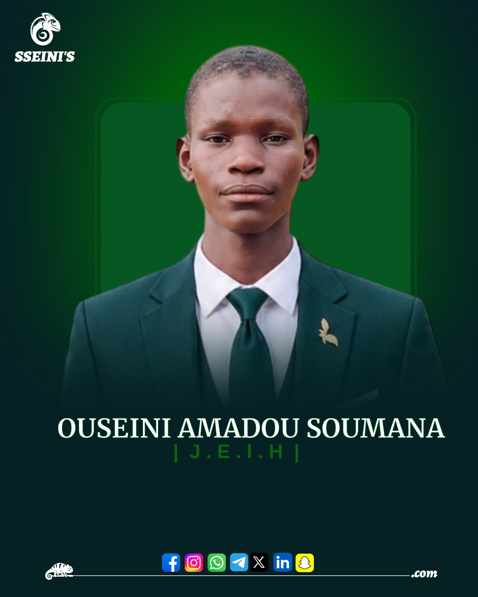

Découvrir l’identité, le positionnement et les éléments de parcours d’Ousseini Amadou Soumana.
Entrepreneur, investisseur et homme d’affaires, avec une ambition tournée vers la création d’activités, le développement de projets et la recherche d’opportunités.
Mon approche repose sur l’initiative, l’apprentissage, la collaboration et la construction progressive de projets à impact économique.
